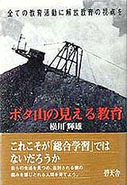

三菱方城炭鉱に強制配転されたアイヌ民族（聞き取り：1992年8月 横川輝雄さん）
1944年（昭和19年）8月11日、日本政府は、閣議で「樺太及釧路ニオケル炭鉱勤労者、資材等ノ急速転換
実施要綱」を決定した。 さて、3140人の日本人の内、山形田川鉱山に180人と三井・三池炭鉱に820人強制連行されたほかは、すべて筑豊炭田へ強制配転さ れた。三菱の方城炭鉱に260人、新入炭鉱に370人、飯塚炭鉱に610人、三井の田川炭鉱に600人、明治鉱業の赤池炭鉱に210人、豊国 炭鉱に90人であった。
これらの日本人のうち、アイヌ民族だと確認された人が方城炭鉱に一人いる。お話をしてくれた方城町のＳさんによれば「銅住進」
さんと言い、小倉南区のＯさんによれば「訪住進」さんと言った。Ｏさんは釧路から強制配転者を引率してきた人であり、Ｓさんは
方城でそれらの人々を受け入れ寮に入れた労務助手であった。 釧路から青函連絡船を経て、北陸地方を通り、筑豊まで連れてこられ、同じ列車の中にその間じゅう乗っていた。米軍の爆撃を避 けながら、何日も何日もかかってやっと筑豊に着いたのである。自分のふとんも持参させられた。 そのアイヌ出身の人は、1944年の9月8日か9月12日かに釧路の浦幌炭鉱から強制配転させられたのであるが、何が気にいらなかっ たのだろうか、あまり働かなかった。とうとう警察が目をつけ始め、警察に連れていかれ、一週間くらいしてやっと釈放されたので ある。同胞が少ない筑豊での生活はどんな思いであっただろうか。警察から帰ってくると、採炭は気がすすまないと労務に言って仕 繰り（坑道にワクをはめる仕事）になり、それから働きだしたのである。おとなしく目立たない人であったという。
なお、1944年（昭和19年）、「戦時炭鉱整備要綱」により、北海道東部（釧路炭田）の炭鉱閉鎖に伴い、各地の炭鉱へ強制配転
された炭鉱労働者の配転状況は次のとおり。
（参考文献） 
（筆者紹介） |